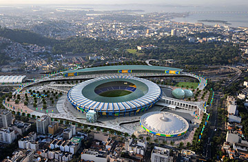
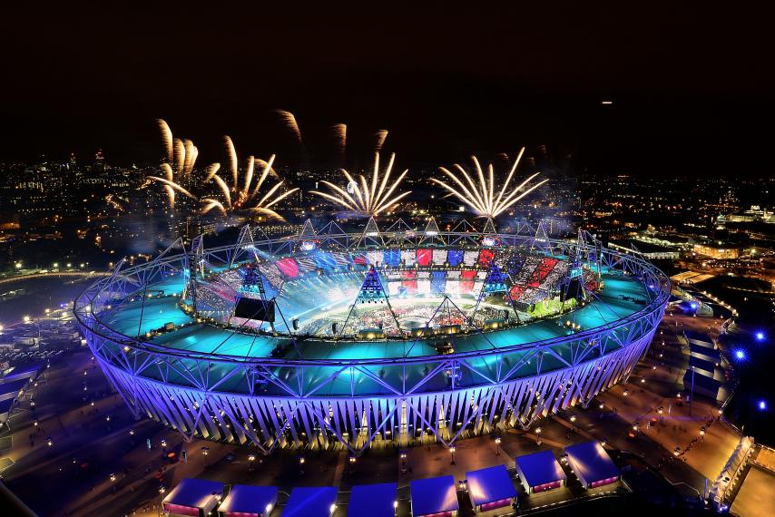
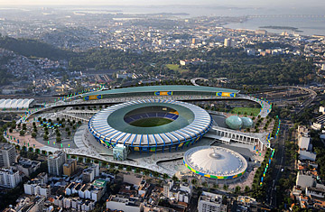
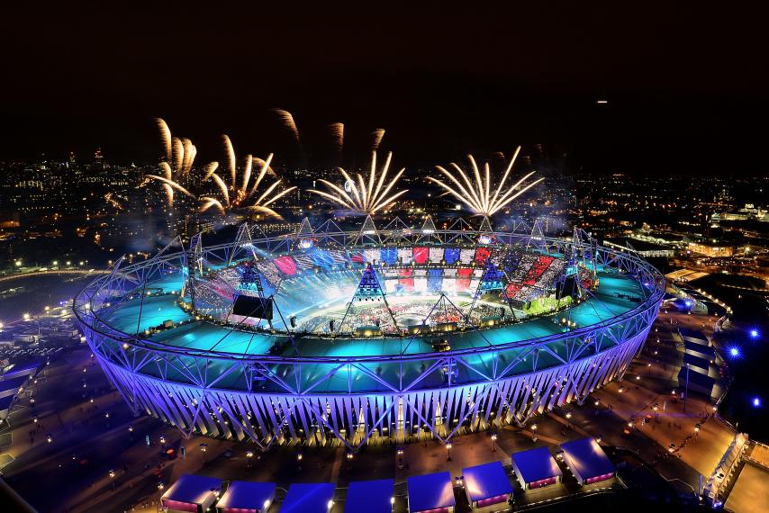

Several Russians banned from competing
First Olympics in Southern Hemisphere;
Focused on environmental issues. Many people are angry over the 2016, as countries did nothing to comment on the sentiments of the
wastefulness of a village just for the olympics. Not only this, but the stadium's prosperity highlighted the corruption of the Brazilian government.
 


